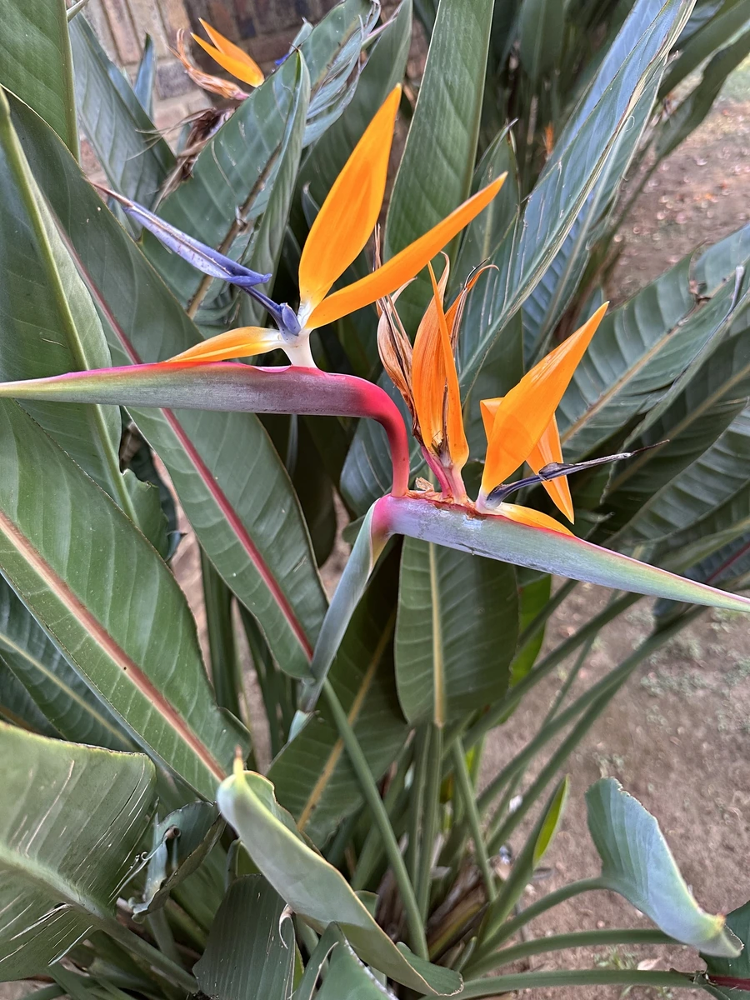

花卉与草本 · 植物界
鹤望兰 Strelitzia reginae

鹤望兰科鹤望兰属多年生草本，花形如昂首的仙鹤，橙蓝相间，是著名的切花与热带园林植物，象征自由与幸福。
- 分类
- 门被子植物门纲木兰纲目姜目科鹤望兰科属鹤望兰属
- 栖息环境
- 南非开普地区灌木丛，喜温暖湿润、阳光充足
- 地理分布
- 原产南非；中国华南、西南及世界温暖地区栽培
- 保护级别
- IUCN 暂无评估；栽培广泛，野生种群未受明显威胁
物种志
鹤望兰为多年生丛生草本，高 1–2 米，具粗壮肉质根，无地上假茎。叶片基生，长椭圆状披针形，长 30–50 厘米，具长叶柄，形似芭蕉叶。花生于花茎顶端，总苞片舟形，绿色带紫红，花冠由橙黄色萼片与蓝色花瓣组成，整体形似一只昂首的仙鹤，长 10–15 厘米；蒴果三棱形，种子黑色。
本种原产南非开普地区，喜温暖湿润、阳光充足的环境，在中国华南、西南常作庭园观花与切花栽培。它花形奇特、色彩艳丽，是世界上最著名的切花之一，象征自由、幸福与爱情；因花似天堂鸟，英文称 Bird of Paradise。鹤望兰不耐寒，北方需温室栽培；生长缓慢，需充足光照与排水良好的土壤。其花蜜丰富，在原产地由太阳鸟传粉。
形态与习性
- 株高1–2 米，丛生，具肉质根
- 花期全年，盛花期 5–10 月
- 花形橙黄萼片配蓝色花瓣，形似仙鹤
- 光照喜光，每天需充足直射光
- 水分喜湿润，忌积水
- 土壤深厚肥沃、排水良好的沙质壤土
- 主要用途切花、庭园观赏与热带景观
趣味知识
- 鹤望兰的花由橙色萼片与蓝色花瓣组成，整体像一只昂首远望的仙鹤。
- 它是南非的国花之一，英文名 Bird of Paradise 意为“天堂鸟”。
- 鹤望兰是世界上最著名的切花之一，瓶插寿命可达两周。
- 它的花蜜在原产地由太阳鸟传播，花的结构与鸟喙高度契合。